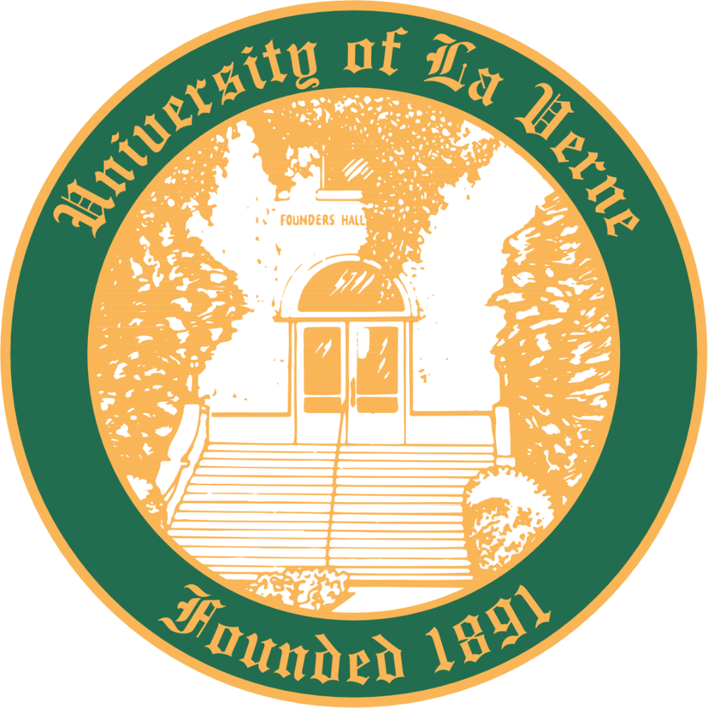

Bachelor's Degree in Computer Science and Computer Engineering
Magna Cum Laude
My name is Nicole Flores. I graduated from the Univeristy of La Verne in January of 2021. During my time there, I learned a bit of software, as well as hardware. We dove the deepest into C++ programming. Beginning with the basics, we then went into Object-Oriented Programming, and ended with Data Structures. In separate courses I dove into the surface of SQL and Linux. My hardware knowledge grew while working with NI Elvis circuit building and arduino. Throughout the years I held multiple jobs and internships. One internship I held as a Web Developer began my interest in HTML. The other allowed me to teach underpriviledge students JavaScript. My jobs were based in technology. I began as a computer science lab aid to reinforce my knowledge and practice my communication skills. Later, I joined a Maker's Space team at my University and a technological support staff. Since graduating, I have expanded my knowledge by practicing various topics, focusing mainly on Python.
My Projects
Water Level Indicator
● Designed an efficient blueprint, including plans for C++ coding
● Built a filtration system through multiple models
● Created hardware and software to power arduino as a water level sensor Project Report Link
Bug Tracker
● C++ code allowing users to file a bug report, change the status, and/or get info on a report
● Created for use during software development Code in doc Link
Library Webpage
● Used HTML coding in WordPress
● Worked with boss to meet all requirements Webpage Link
Smart City Report
● Extensive research and documenting for presenting to audience Project Report Link

I am eager and ready to enter the workforce. With my quick learning skills, I believe I will be able to step up to the plate. I am a team-player that can transition to leadership when necessary. It is my goal to elevate any team I become apart of.